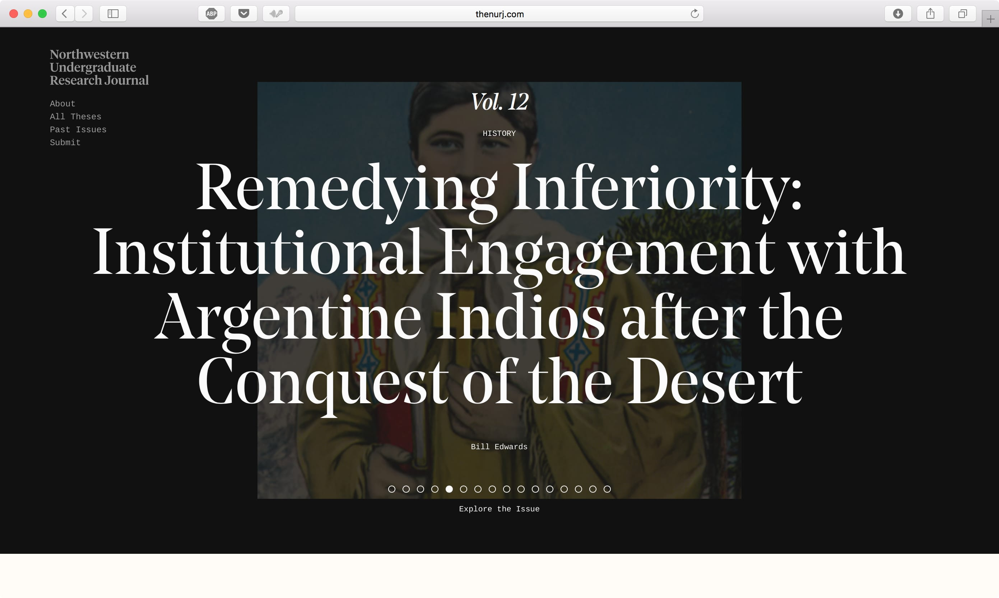
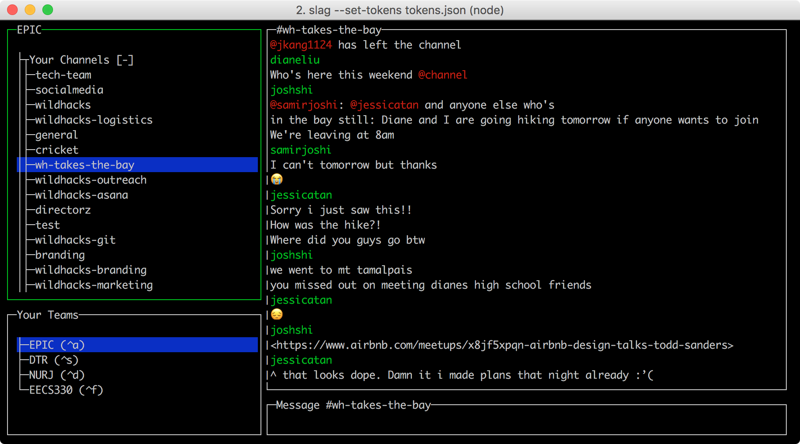
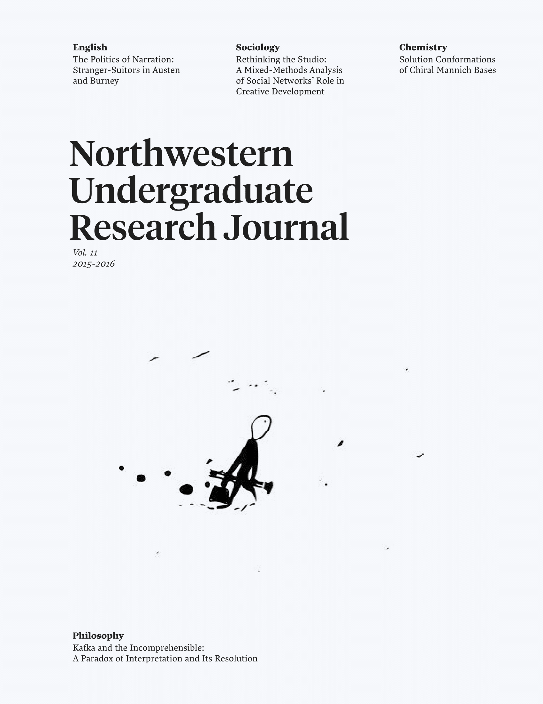
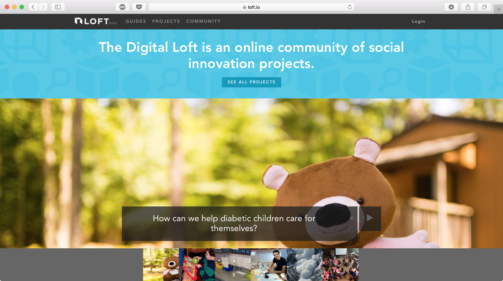
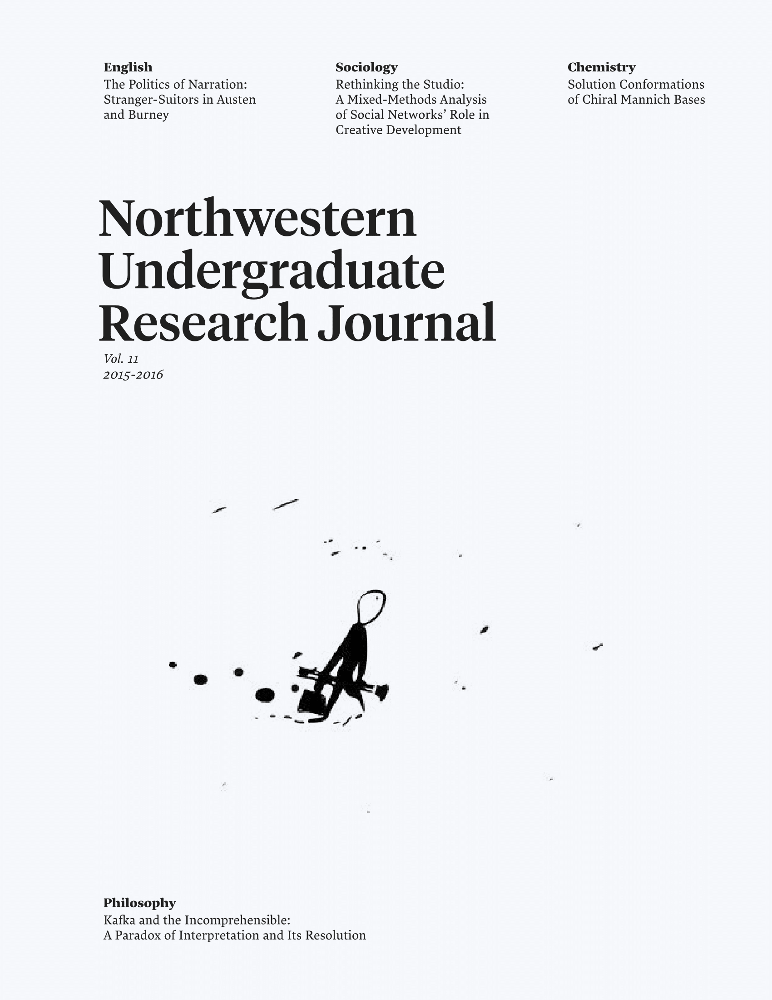
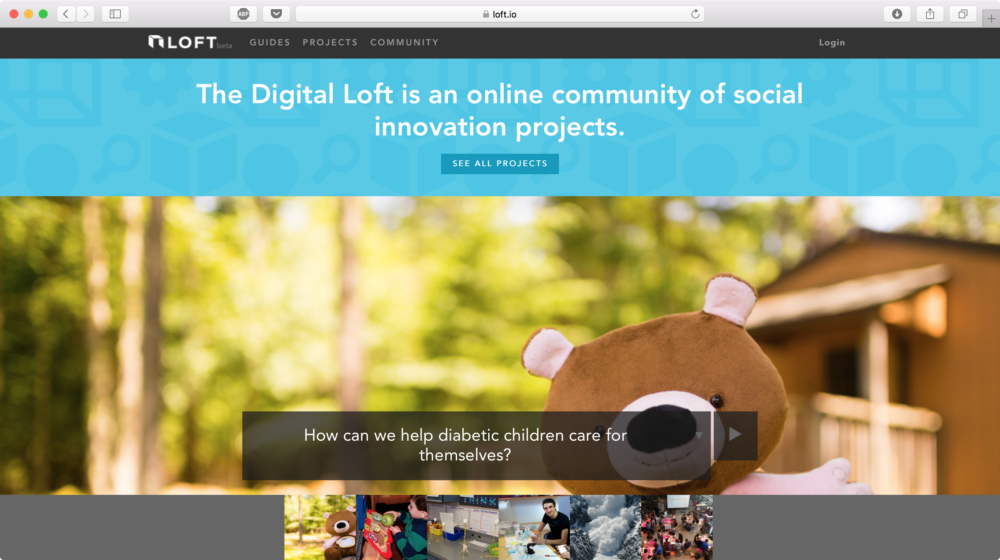
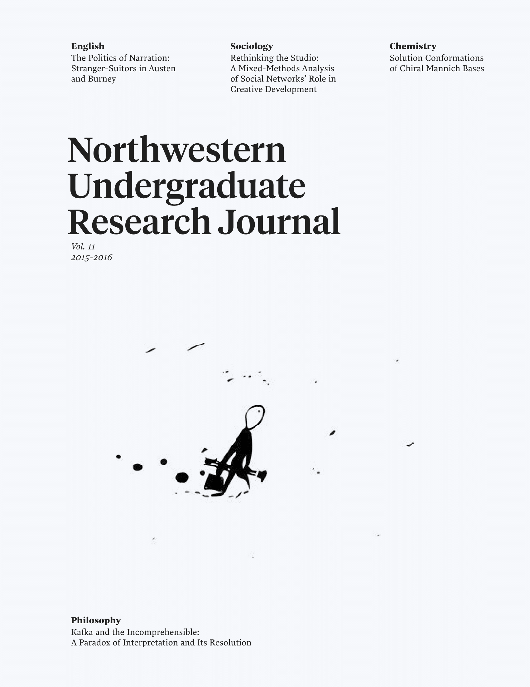
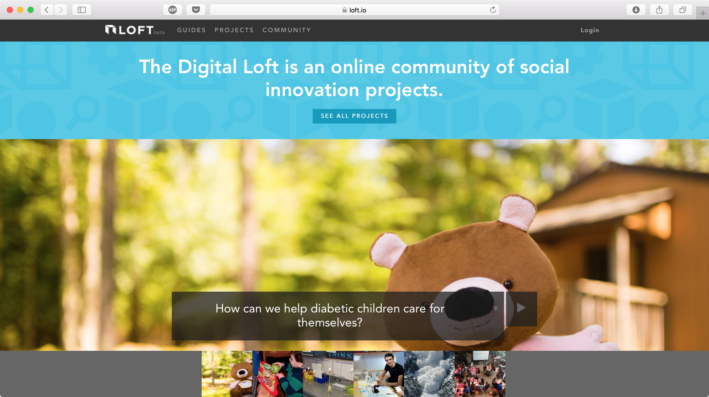

Josh ShiStudying Computer Science at Northwestern UniversityLinksTwitter →Github →Writing →Is:Software Engineer Intern, BoxEditor-in-Chief, Northwestern Undergraduate Research JournalStudent Fellow, Knight LabTeaching Assistant, NUventionWas:Director, WildHacksSoftware Engineer Intern, GrouponTeaching Assistant, Human-Computer InteractionProjects

thenurj.com →An online home for the Northwestern Undergraduate Research Journal.

slag →A terminal client for Slack.Collaborative Code Competitions →Creating a collaborative code-learning experience.steganotes →A project exploring data transfer via audio signals.WildHacks 2016 →Branding and front-end work for WildHacks 2016.

Northwestern Undergraduate Research Journal Vol. 11 →Redesign of the Northwestern Undergraduate Research Journal.

loft.io →User research for the Digital Loft.WildHacks 2015 →Branding and front-end work for WildHacks 2015.
 WildHacks 2016 →
Branding and front-end work for WildHacks 2016.

Northwestern Undergraduate Research Journal Vol. 11 →
Redesign of the Northwestern Undergraduate Research Journal.

loft.io →
User research for the Digital Loft.
WildHacks 2016 →
Branding and front-end work for WildHacks 2016.

Northwestern Undergraduate Research Journal Vol. 11 →
Redesign of the Northwestern Undergraduate Research Journal.

loft.io →
User research for the Digital Loft.
 WildHacks 2015 →
Branding and front-end work for WildHacks 2015.
WildHacks 2015 →
Branding and front-end work for WildHacks 2015.